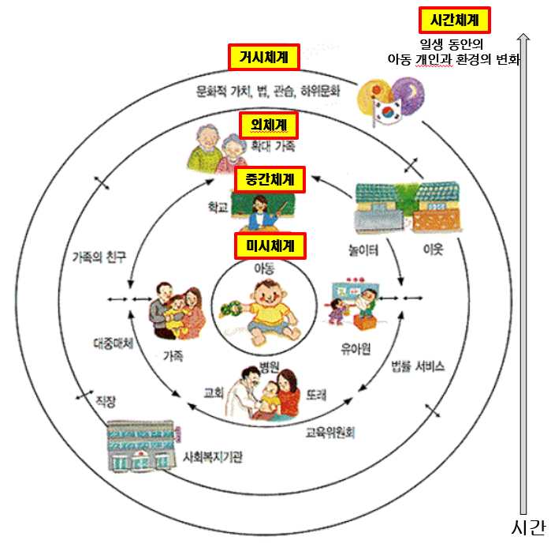
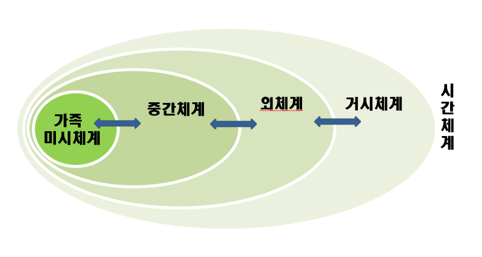

브론펜브레너의 생애 및 사상
브론펜브레너(Urie Bronfenbrenner, 1917~2005)는 1917년에 러시아의 모스크바에서 출생했으나 6세 때 미국으로 이주하여 미국에서 살았다. 그는 1938년 음악과 심리학을 이중으로 전공하여 코넬 대학에서 학사학위를 받았으며, 하버드 대학에서는 심리학 전공으로 석사학위를 취득하였고, 1942년에 미시간 대학에서 박사학위를 취득하였다.
브론펜브레너(Bronfenbrenner)는 1948년 미국 코넬대학의 심리학과 교수로 인간발달, 가족학과 석좌교수로 재직했다. 그는 유럽 6개 대학에서 명예학위를 받았으며, 개인의 발달 과정을 개인과 환경의 상호 작용과 제도적인 측면에서 이해하고자 하는 생태학적 체계이론을 정립했다.
1994년 한국을 방문하여 한국영아학회와 발달심리학회가 공동으로 개최한 국제학술심포지엄에서 기조연설을 하였다. 확장된 환경과 아동과의 상호 작용을 중시하면서, 아동은 단순히 환경에 영향을 받는 존재가 아니라, 환경에 영향을 주기도 하는 능동적 존재임을 강조하였다. 저서 『인간발달 생태학(The ecology of development, 1979)』에서 발달에 미치는 생태학적 접근은 환경을 고정된 방식으로 아동에게 영향을 주는 생활환경은 가족, 이웃, 지역, 국가 등 사회·문화적 맥락까지 포함되어야 한다는 물리적, 사회적 영향을 체계화하였다.

생태학적 체계이론의 특징과 5가지 환경
생태학 체계이론은 인간발달을 포괄적인 관점에서 아동의 발달을 이해하고 올바르게 도움을 주기 위해서는 아동을 둘러싼 사회문화적 관점으로 이해하고자 미시체계, 중간체계, 외체계, 거시체계, 시간체계라는 다섯 가지로 구분하여 제시하였다.
1) 미시체계(microsystem)
미시체계는 중앙의 가장 안쪽에 있는 개인의 중심환경이다. 아동에게 직접 영향을 주는 가족이나 또래 등 근접한 환경이다. 미시체계는 대부분 부모, 친구, 교사와 같은 주변 사람과 직접적인 상호작용을 한다. 아동의 기질과 성격은 환경의 영향을 받는 수동적인 존재가 아니라 환경을 구성하는 능동적인 주체로 성장하면서 변화한다. 아동과 관련된 사회문화적 요인에 관한 연구 대부분이 중앙에 있는 미시체계에 초점을 맞추고 있다.
2) 중간체계(mesosystem)
중간체계는 두 개 이상의 환경과 상호관계 단계이다. 즉, 아동의 부모의 학교 참여와 가정학습, 부모 혹은 교사와의 관계, 부모와 형제관계, 부모와 이웃과의 관계 등이다. 이 체계들 간의 관계가 밀접하면 할수록 아동의 발달은 순조롭게 진행되지만, 그렇지 않을 경우 원활한 상호작용이 이루어지지 않아 발달에 영향을 미친다.
3) 외체계(exosystem)
외체계는 아동과 직접적인 상호작용은 하지 않으나 미시체계에 간접적으로 영향을 미치는 사회적 환경이다. 가족과 친구, 부모의 직장, 사회복지기관, 교통, 대중매체 등이 포함된다. 아동은 이러한 환경 체계에 직접 참여하지 않지만 활동 영역에 여러 가지 제한을 받게 되므로 아동에게 미칠 환경 조성 시 신중하게 고려해야 한다.
4) 거시체계(macrosystem)
거시체계는 미시체계, 중간체계, 외체계에 포함된 모든 요소 뿐만 아니라 문화적 환경, 대중이 갖는 사회적 관심과 유행 등 생활양식까지 포함한다. 거시체계 요인들은 대부분 비형식적인 것으로 사회의 가치관, 도덕관, 사회의 정책 등은 신념, 태도, 전통 등을 통해 아동의 발달에 영향을 미친다. 거시체계는 일반적으로 다른 체계보다 안정적이지만 때로는 사회변화에 따라 매우 강력한 변화를 발휘한다.
5) 시간체계(chronosystem)
시간체계는 시간적으로 한 시점의 사건이나 경험이 아닌 전 생애를 걸쳐 일어나는 변화와 사회 역사적 환경을 의미한다. 어떤 시대에 출생하여 성장하였는가, 형제의 출생, 이사, 부모의 이혼 등의 중대한 사건은 아동과 환경 간의 관계를 변화시킬 뿐만 아니라 발달에 영향을 준다. 인간의 전 생애에 걸쳐 일어나는 변화와 사회, 역사적인 환경은 신체, 인지 및 인성까지 영향이 미친다. 이러한 시간체계는 아동의 환경과 경험의 재선택·재구성 되어 가면서 내부의 역동적이면서 계속적인 변화를 추구한다.

이와 같이 브론펜브레너(Bronfenbrenner)의 생태학접근에서 환경이란 아동에게 영향응 주는 역동적이며 변화하는 것이다. 이에 아동을 둘러싼 환경의 미시체계는 중간체계, 외체계, 거시체계, 시간체계에 영향을 주고 받을 수 있다. 아동이 건강하게 성장하고 발달하기 위해서는 각 체계 간의 직·간접적인 상호 협력을 개인과 부모와 교사, 사회적 환경의 상호작용의 결과임을 인식해야 한다는 시사점을 제시하였다.
2022.01.07 - [분류 전체보기] - 피아제의 인지 발달 이론 - 주변 세계를 이해하는 인지의 변화
피아제의 인지 발달 이론 - 주변 세계를 이해하는 인지의 변화
인지발달이론(cognitive development theory)은 인간이 유전적 요인에 의해 결정되는 존재가 아니라 주변환경과 문화적 자극을 능동적으로 구성할 수 있는 잠재력을 지닌 존재로 발달한다는 이론이다.
think-sis.tistory.com